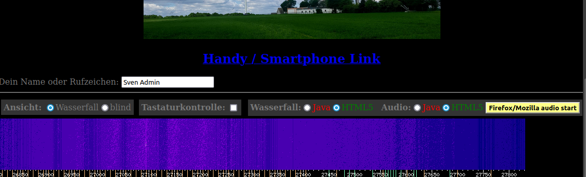

Die "Kein-Ton-Problematik"
Das begleitet uns Admins/Sysops, seit dem es Audioausgaben gibt.
In der Vergangenheit sind oft durch Sicherheitsupdates der
Internetbrowser(Firefox/Google-Chrome/Opera/Edge/Explorer/Safari)
die Töne regelmäßig abhanden gekommen.
Eine schnelle Lösung, um den Ton einzuschalten:
Um diese Schaltflächen zu finden, hier noch mal ein Positionsbild der Schaltflächen:

Es gibt allerdings auch permanente Einstellungen der Internetbrowser:
Firefox" "
Google Chrome" "
Safari" "
Opera"
Allerdings kann es möglich sein, daß diese Lösungen schnell wieder veraltet sind, was natürlich wieder mit neuen Updates zusammenhängt.